原论文 / 项目页 leaderboard
包含 Seed1.6-Thinking、Gemini2.5-Pro、GPT-4o、Qwen3-VL、Qwen3-VL-235B，以及 Design2Code、DCGen、LatCoder、UICopilot、WebSight-VLM-8B、ScreenCoder、UI-UG 等 baseline。
官方项目页这个页面把 Widget2Code 的官方评测口径、Qwen3.5-9B stage-wise pipeline 跑分、12 个小指标分布和代表性失败 case 放在一起，用于后续找方法动机。
Widget2Code 的任务不是生成普通网页，而是把一张 widget 截图转成结构化 DSL，再编译渲染成 widget 图像。
主要输入是一张 widget 截图；pipeline 会先做 layout detection、icon caption/retrieval、图表/颜色识别，再拼出最终 DSL prompt。
核心输出是结构化 widget.json，随后自动编译成 widget.jsx 并通过浏览器渲染出 output.png。
评分阶段只比较两张图：参考图 gt/image_xxxx.png 和生成图 image_xxxx/output.png。中间件不进入分数。
官方 evaluator 在 tools/evaluation/eval.py 中读取 GT 图和 output 图，resize 后计算五组指标。
从 gt_dir 读参考图，从 pred_dir/image_xxxx/output.png 读生成图。
把生成图 resize 到参考图尺寸，用于 layout、legibility、style 和 perceptual 指标。
Geometry、Perceptual、Layout、Legibility、Style 五组指标全部由两张图计算。
每个 case 写出 evaluation.json；我们的 case hub 额外保存 DSL、JSX、debug 和中间产物，供失败归因。
下面是 Widget2Code 官方主表截图。我们下一节只对齐同一列结构，不把自己的结果混进原图。
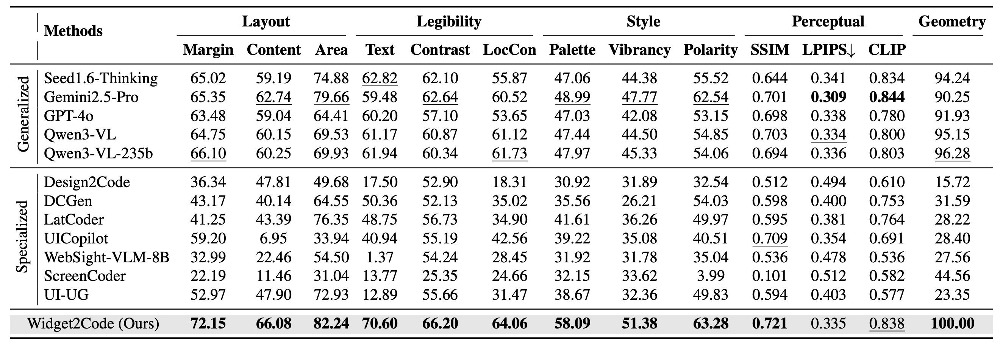
这一节按 WebGen-Bench 页面的口径整理：先判断有没有“独立后续论文直接打原 benchmark”，再把工具、数据集和引用资料分层列出来。
公开检索中还没有看到后续论文在 Widget2Code 官方 1,000 test split 和官方 evaluator 上报告新的、可直接和 Table 1 混排的结果。目前可比数字主要仍来自官方论文/项目页的 leaderboard。
包含 Seed1.6-Thinking、Gemini2.5-Pro、GPT-4o、Qwen3-VL、Qwen3-VL-235B，以及 Design2Code、DCGen、LatCoder、UICopilot、WebSight-VLM-8B、ScreenCoder、UI-UG 等 baseline。
官方项目页官方 evaluator 已发布到 PyPI，支持 gt_dir、pred_dir、workers、cuda，输出 per-case evaluation.json 和聚合表。
Hugging Face 数据集公开 2.82k rows，GitHub repo 搜索主要是作者自己的实现、bench、SFT、lab；PaperNotes/Gist 等页面复述官方表格，没有新增分数。
HF 数据集| 资料 | 类型 | 能否当作打榜 | 关键证据 | 对我们的意义 |
|---|---|---|---|---|
| Widget2Code 论文 arXiv 2025-12 / CVPR 2026 |
原始 benchmark 论文 | 官方主表 | Table 1 报告五组指标：Layout、Legibility、Style、Perceptual、Geometry；官方方法 Widget2Code 仍只有 Style 58.09 / 51.38 / 63.28、SSIM 0.721、CLIP 0.838。 | 榜单不是 90+ 饱和状态，尤其颜色、图标、局部比例和 DSL 约束仍有明显空间。 |
| Djanghao/widget2code 官方代码仓库 |
官方实现与结果下载 | 可复现，不是独立打榜 | README 提供完整 framework、batch scripts、evaluation tools，并提供 All Methods Results 下载；这些是作者发布的官方结果。 | 我们后续如果做方法，需要优先对齐这个 repo 的输入、DSL、renderer 和 evaluator，避免评测口径被质疑。 |
| widget2code-bench PyPI 2026-03 |
官方 evaluator 包 | 工具使用信号 | 包文档明确按 GT 图和 prediction 图计算 12 个质量指标，并输出 metrics_stats.json / metrics.xlsx。 |
可跑性很好，适合我们把 9B、多轮修复、agentic/self-check 方法做成可复现结果。 |
| HF dataset Djanghao/widget2code-benchmark |
官方数据集 | 数据使用信号 | 数据集页面显示约 2.82k rows，包含 train/test split；公开下载量说明已有社区关注，但不提供模型打分。 | 不是 nobody cares；但由于后续直接榜少，如果我们跑全量且开源结果，容易形成第一批独立可比 baseline。 |
| PaperNotes / Gist.Science | 第三方论文笔记 | 只引用 | 页面复述原论文 Table 1、ablation 和关键发现，没有新增模型或新实验数字。 | 可作为“有人读/有人收录”的信号，不能作为横向 baseline。 |
| arXiv / GitHub 搜索 | 公开索引检索 | 未命中直接打榜 | 精确检索 Widget2Code、WidgetFactory、widget2code-bench 未发现后续独立论文结果；GitHub repo 搜索返回的公开仓库主要是作者 Djanghao 系列。 |
当前最稳妥的写法是“暂未发现独立后续直接打榜”，不要写成“没人关注”。 |
本行是 OpenRouter qwen/qwen3.5-9b，stage-wise cached Widget2Code pipeline。已补 SigLIP image-to-image 作为 CLIP 类视觉相似度，987/1000 个样本有该分数，975/1000 成功写出官方 evaluation。
| Methods | Margin | Content | Area | Text | Contrast | LocCon | Palette | Vibrancy | Polarity | SSIM | LPIPS↓ | CLIP | Geometry |
|---|---|---|---|---|---|---|---|---|---|---|---|---|---|
| Qwen3.5-9B (ours run) | 67.90 | 65.19 | 74.84 | 59.74 | 61.46 | 59.81 | 43.25 | 38.72 | 59.49 | 0.677 | 0.376 | 0.860 | 100.00 |
覆盖差异：3 个样本未进入 DSL，10 个样本未渲染，12 个样本有 output 但 evaluator 在本机 GPU/CPU fallback 仍未产出 evaluation.json。CLIP 列使用本地补算的 SigLIP image-to-image 相似度，不一定与论文主表使用的 CLIP backbone 完全同源。
不再只看 layout_avg/style_avg，而是直接看小指标。低分数量越多，越适合作为 failure case 切入口。
| 指标 | 组别 | 均分 | 相对强弱 | P10 阈值 | 低于 50 | 说明 |
|---|---|---|---|---|---|---|
MarginAsymmetry边距对称性 |
Layout | 67.90 | 4.42 | 309 | 页面左右/上下留白是否接近参考图。 | |
ContentAspectDiff内容宽高比例 |
Layout | 65.19 | 0.10 | 349 | 主要内容区域的宽高比例是否接近参考图。 | |
AreaRatioDiff内容面积比例 |
Layout | 74.84 | 32.64 | 161 | 主要内容占画面的面积比例是否接近参考图。 | |
TextJaccard文本重合度 |
Legibility | 59.74 | 6.49 | 310 | 生成图与参考图中的文字集合重合程度。 | |
ContrastDiff整体对比度 |
Legibility | 61.46 | 0.00 | 319 | 整体文字/背景对比度是否接近参考图。 | |
ContrastLocalDiff局部对比度 |
Legibility | 59.81 | 0.00 | 327 | 局部区域文字和背景的可读性是否接近参考图。 | |
PaletteDistance调色板一致性 |
Style | 43.25 | 0.20 | 529 | 主色、辅色和整体配色是否接近参考图；这里按 evaluator 的 0-100 分数使用。 | |
Vibrancy色彩鲜明度 |
Style | 38.72 | 1.95 | 638 | 颜色饱和度和视觉鲜明程度是否接近参考图。 | |
PolarityConsistency明暗极性一致性 |
Style | 59.49 | 9.64 | 374 | 深色/浅色主题和整体明暗关系是否一致。 | |
SSIM结构相似度 |
Perceptual | 67.72 | 46.18 | 126 | 图像结构相似度；原始 ssim 为 0-1，这里转成 0-100。 | |
LPIPS_quality感知距离质量 |
Perceptual | 62.45 | 47.34 | 125 | 由 LPIPS 距离转换而来：quality=(1-lp)*100；原始 lp 越低越好。 |
这里不是人工精标，也不是官方统计；它用现有小指标和 layout label 做多标签启发式分桶，目的是帮助我们定位值得深入看的 failure mechanism。
widget.json。缺失样本多半是生成前失败。output.png。渲染失败样本不进入两图评分。evaluation.json，作为下面 proxy 的分母。每个样本可以同时落入多个桶，所以各桶数量不能相加。这个视图回答的是“哪些失败机制覆盖面大、值得设计方法去修”。
< 50，整体视觉用 SSIM < 0.60 或 SigLIP < 0.75。Icon、Image、ProgressRing。| 问题桶与规则 | 样本数 | 占比 | 主要受伤指标 | 典型现象 | 代表 case |
|---|---|---|---|---|---|
| 资产 grounding 错配 layout detector 识别到 Icon / AppLogo / Image，且 SigLIP < 0.80 或 Palette/Vibrancy < 50。 |
684 70.2% |
CLIP/SigLIP、Palette、Vibrancy、SSIM | 图标、Logo、图片区域被替换成语义相近但视觉不对的资产，颜色和比例也会被连带拉偏。 | image_0729 image_1388 image_0375 image_1629 | |
| 布局比例失真 MarginAsymmetry / ContentAspectDiff / AreaRatioDiff 任一项 < 50。 |
501 51.4% |
Layout、SSIM、LPIPS | 整体宽高、内容面积、局部-全局比例不稳，小 widget 被放大、横向卡片被缩角、overlay 变成上下堆叠。 | image_1386 image_1629 image_0729 image_1388 | |
| 文本与可读性缺失 TextJaccard / ContrastDiff / ContrastLocalDiff 任一项 < 50。 |
619 63.5% |
Legibility、TextJaccard、Contrast | 文字内容漏掉、字号过小、文本集合不重合，或前景/背景对比度和参考图差距大。 | image_1386 image_0375 image_0212 image_1388 | |
| 颜色与风格偏移 PaletteDistance / Vibrancy / PolarityConsistency 任一项 < 50。 |
833 85.4% |
Style、Palette、Vibrancy、Polarity | 主色、饱和度、深浅主题或局部色彩关系没对齐，尤其在图片替换和背景层级错误时很明显。 | image_0375 image_1629 image_1388 image_0729 | |
| 组件语义没有落地 layout detector 识别到交互/图表/进度类组件，且 Text/Layout/SSIM 任一相关项偏低。 |
420 43.1% |
TextJaccard、ContentAspect、Area、SSIM | 识别到组件名，但没有实现内部状态、数值、中心文本、选中态、轨道/进度等关键语义。 | image_0212 image_1629 image_0002 image_0005 | |
| 整体视觉相似度低 SSIM < 0.60 或 SigLIP < 0.75。 |
304 31.2% |
SSIM、LPIPS、CLIP/SigLIP | 即使部分元素被识别，最终图像整体结构或语义视觉相似度仍明显偏离。 | image_1386 image_1629 image_1388 image_0375 |
| 问题桶 | Layout 均分 | Legibility 均分 | Style 均分 | SSIM | SigLIP |
|---|---|---|---|---|---|
| 资产 grounding 错配 | 68.36 | 59.15 | 40.52 | 0.658 | 0.835 |
| 布局比例失真 | 46.86 | 56.32 | 45.31 | 0.657 | 0.843 |
| 文本与可读性缺失 | 67.31 | 47.03 | 44.23 | 0.649 | 0.846 |
| 颜色与风格偏移 | 69.72 | 58.42 | 41.63 | 0.666 | 0.851 |
| 组件语义没有落地 | 57.10 | 54.05 | 43.42 | 0.658 | 0.848 |
| 整体视觉相似度低 | 63.11 | 50.09 | 37.33 | 0.511 | 0.768 |
对应 CSV 已保存到 submetric_analysis/problem_distribution_proxy.csv。如果后续要写论文，建议从这些桶里抽样人工复核，再把 proxy 分布升级成人工标注分布。
每个 case 只展示参考输入图和最终输出图。layout 可视化是中间 VLM detector 的带噪声结果，不作为主报告的核心视觉证据；需要排查时可进入 case 目录查看。
尺度文本overflow
肉眼现象：航班倒计时卡片被渲染成近乎黑屏，只剩很小文字。
初步归因：layout 已识别顶部胶囊和三行大字，但 DSL 将点阵文字拆成普通 Text，并产生纵向 overflow。
| ContentAspectDiff | 0.00 |
| AreaRatioDiff | 0.01 |
| TextJaccard | 0.00 |
| SSIM | 0.099 |
中间产物：manifest · raw response · icon retrieval
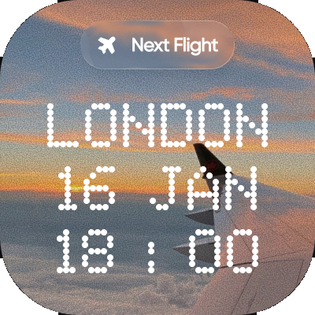
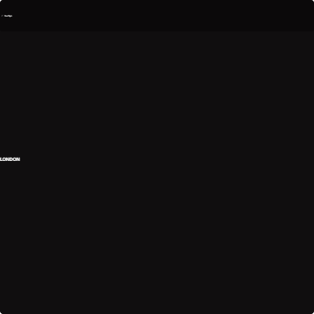
DSL红屏schema
肉眼现象：音乐播放列表输出为红色 error overlay。
初步归因：widget.json 中数组 padding 被编译成非法 JSX，说明结构化 DSL 和 renderer schema 没闭环。
| TextJaccard | 0.00 |
| ContrastDiff | 0.00 |
| Vibrancy | 0.00 |
| SSIM | 0.192 |
中间产物：manifest · raw response · icon retrieval
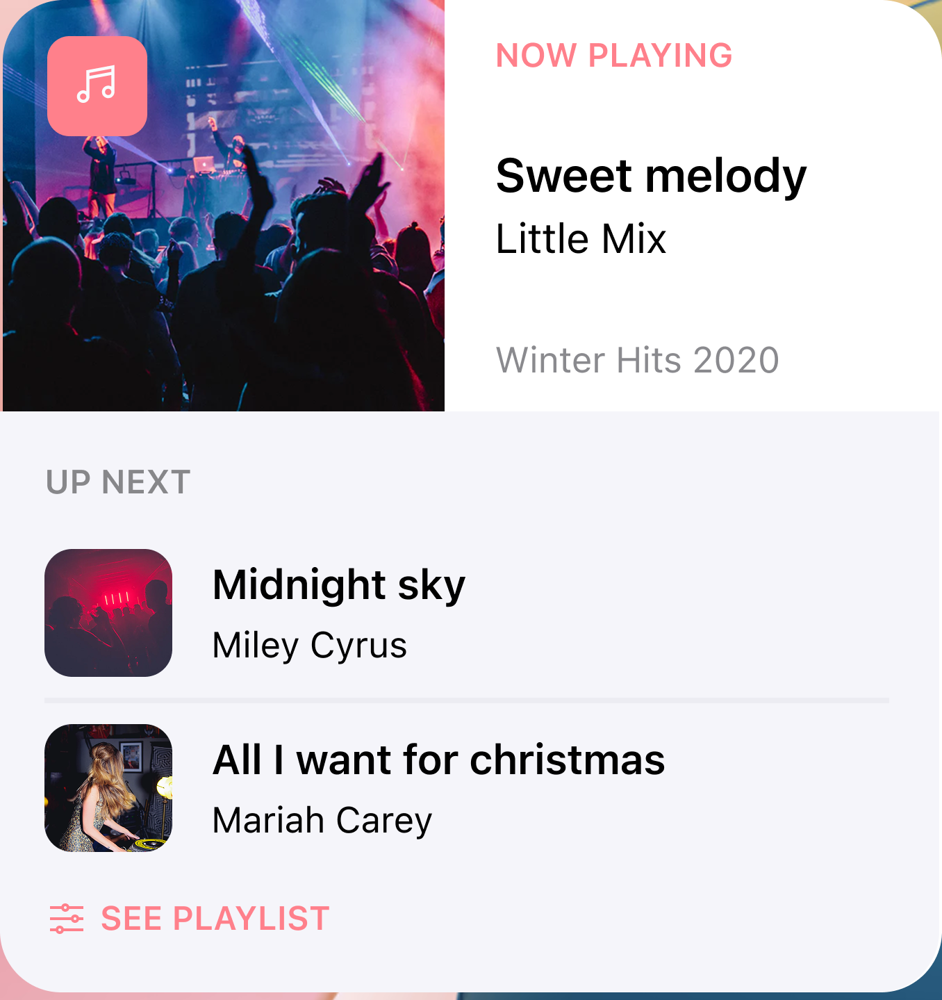
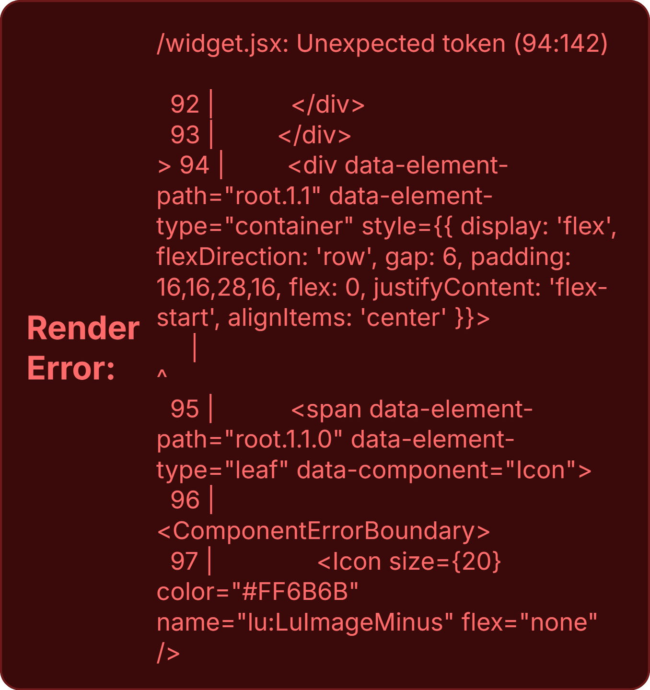
图片logo比例
肉眼现象：Apple TV 横向卡片被缩到左上角，海报和 logo 都不保真。
初步归因：layout 抓到了卡片、文本和 tv+，但 DSL 使用远程图片替代原图，固定尺寸和画布比例没有对齐。
| ContentAspectDiff | 0.00 |
| TextJaccard | 0.00 |
| ContrastDiff | 0.00 |
| SSIM | 0.558 |
中间产物：manifest · raw response · icon retrieval
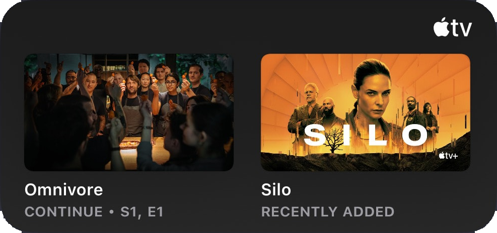
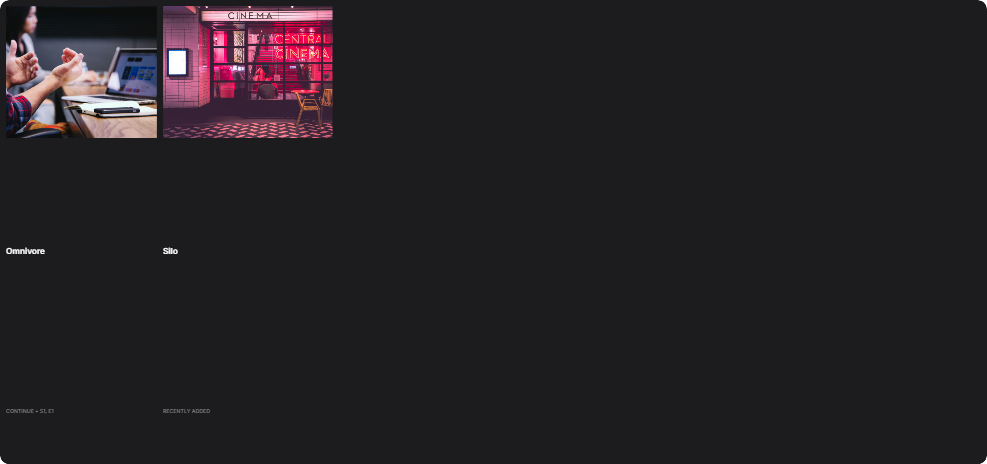
组件文本语义
肉眼现象：三个彩色计时器变成三个空心圆环，中心时间文字消失。
初步归因：layout 已识别 ProgressRing 和文本，但 DSL 只保留圆环组件，没有实现实心渐变圆盘和中心文本。
| TextJaccard | 0.00 |
| Polarity | 0.00 |
| SSIM | 0.046 |
| LPIPS | 0.464 |
中间产物：manifest · raw response · icon retrieval
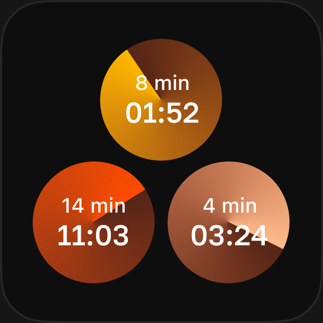
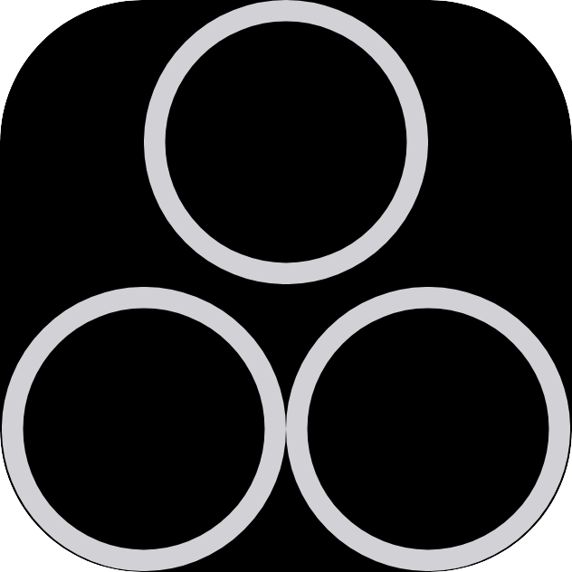
局部-全局尺度slider
肉眼现象：小天气 widget 被生成成全屏深色天气控制条。
初步归因：layout 抓到小卡片 bbox，但 DSL 将局部对象当成整个画布，忽略外部灰色背景和相对尺度。
| ContentAspectDiff | 0.00 |
| Palette | 0.05 |
| Vibrancy | 0.04 |
| SSIM | 0.121 |
中间产物：manifest · raw response · icon retrieval
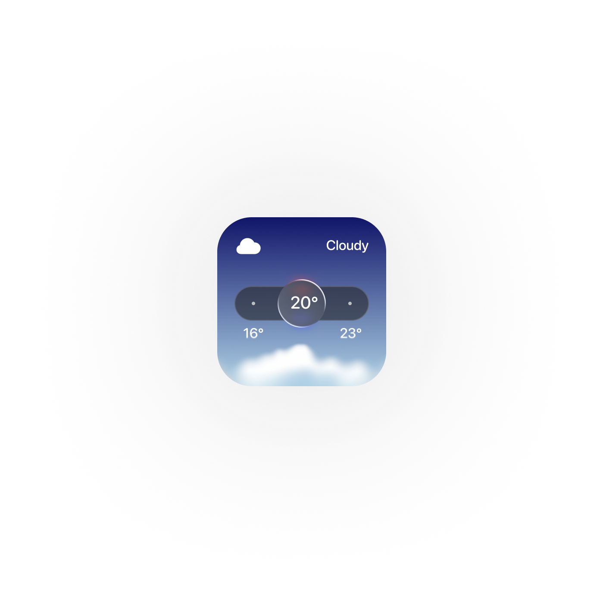
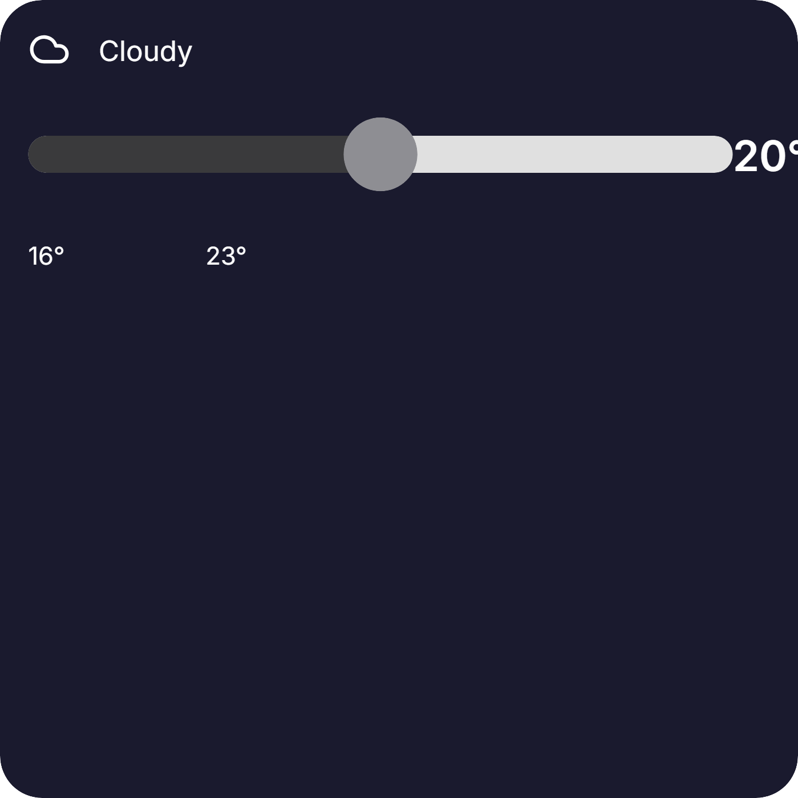
图片overlay层级
肉眼现象：模糊来电背景被换成清晰人像，按钮和文字被挤到底部。
初步归因：layout 抓到了按钮和文字，但 DSL 用新图片替代原背景，且把 overlay 层级变成上下堆叠。
| Margin | 3.13 |
| TextJaccard | 0.00 |
| LPIPS | 0.814 |
| SSIM | 0.184 |
中间产物：manifest · raw response · icon retrieval
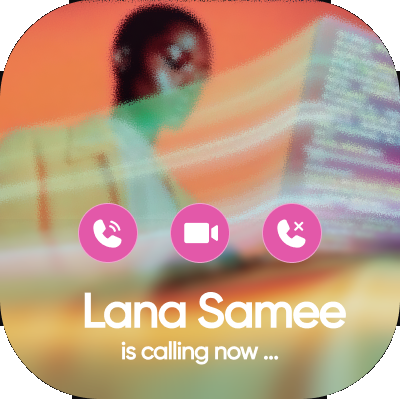
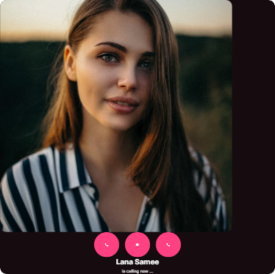
Widget2Code 暴露的核心问题不是单纯“看不懂图”，而是截图理解到结构化 DSL 生成之间存在断层。
模型一次性写完整 widget.json 很容易把视觉理解、资产检索、布局比例和 renderer 约束混在一起出错。更可控的方向是先生成 DSL，再执行渲染，用最终图和中间件定位错误，最后只修改出错的 DSL 局部。
模型不是直接画图，而是把截图翻译成 widget.json。难点不只是看懂截图，还包括把视觉结果写成 renderer 可执行、视觉保真的结构。
模型可能识别到了组件名，但 DSL 没写内部状态、中心文字、进度值或层级。肉眼看就是“组件在，但语义没有落地”。
图标、Logo、图片 crop 被 caption/retrieval 错替换后，会同时拉低语义相似度、颜色、布局和整体观感。
很多 case 组件类别基本有了，但局部-全局尺度、相对面积、横纵比例错了，最终仍然不像原图。
layout bbox、icon caption、asset retrieval、color extraction 的小偏差会在 DSL 里固化，最后变成明显的视觉错误。
评测只比较参考图和 output.png，但方法动机需要回看 layout-data.json、icon-retrieval.json、raw_response.txt 和 widget.json。
9B 可以生成大部分 DSL，但不会稳定检查 schema、红屏、小字溢出、布局比例和图片替换问题，需要外部校验与局部修复环节。
本报告由本地已有 Widget2Code 实验产物生成，没有重新调用模型或评测器。相对路径均以本 HTML 所在目录为基准。